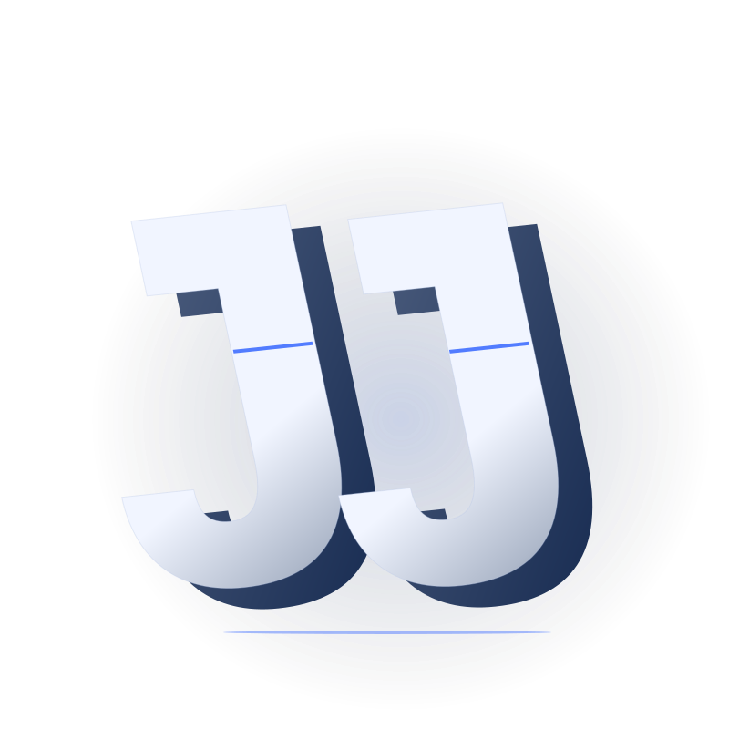

CREATIVE DEVELOPMENT /
VIBE CODINGPERSONAL LAB — VOL. 01

AN IDEA TAKING SHAPE.
01 / THE PLAYGROUND
拖动旋转 · 点击拆解
静态预览 · 继续向下探索作品
01 SELECTED WORK
从一次尝试，
到一个值得留下的体验。
Things I've
brought to life.
[
]
这个分类还没有作品。试试其他分类。
02 BEHIND THE WORK
HUMAN CURIOSITY. MACHINE POSSIBILITY.
用对话启动，
用细节完成。
我是 JJchess，一个深度 vibe coder。我在 Codex 和 Claude Code 中把好奇心写成代码，从一个按钮的反馈，到一个完整页面的节奏。
这里留下那些值得再看一眼、再玩一次的界面。每件作品都附上设计思路和源码，让想法有迹可循，也有继续生长的空间。
打开我的源码档案
01 / EXPLORE02 / MAKE03 / REFINE
THE NEXT IDEA STARTS WITH CURIOSITY.
Stay curious.